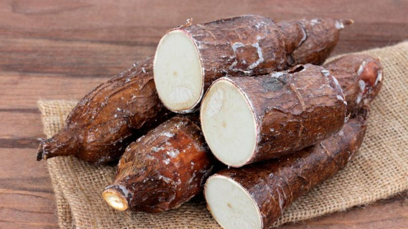

La papa es un tubérculo comestible que crece bajo tierra y
almacena nutrientes. Pertenece a la familia de las solanáceas
y se originó en las montañas de los Andes de Sudamérica.
yuca

descripcion
La yuca es un tubérculo que proviene del arbusto Manihot esculenta.
Es un alimento rico en energía y nutrientes y tiene un aspecto
similar al de la patata.
zanahoria
descripcion
La zanahoria (Daucus carota) es una hortaliza de color naranja y
textura leñosa. Es una raíz pivotante engrosada de la planta que
acumula los nutrientes necesarios para mantener la parte aérea.